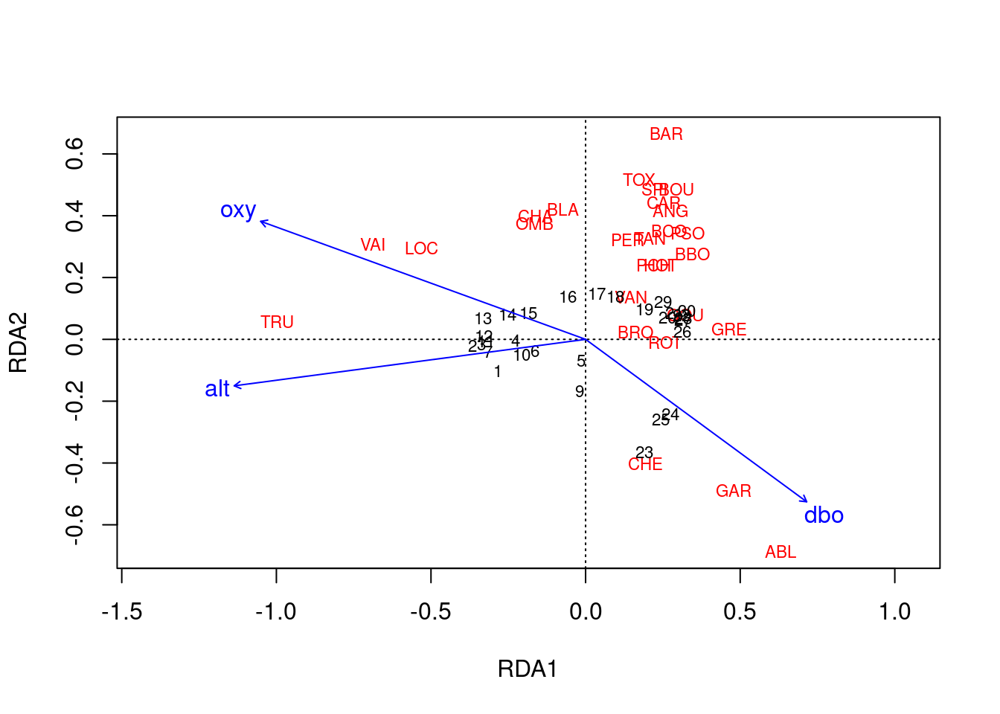

Chapitre 6 Analyse canonique de redondances
L’analyse de redondance (RDA) est une extension directe de la régression multiple, car elle modélise l’effet d’une matrice explicative \(X\) (n x p) sur une matrice de réponse \(Y\) (n x m). La différence ici est que nous pouvons modéliser l’effet d’une matrice explicative sur une matrice de réponse*, plutôt que sur une seule variable de réponse. Par exemple, RDA nous permet de modéliser l’effet des variables environnementales sur l’ensemble de la communauté, plutôt que sur la richesse des espèces. Pour ce faire, on effectue une ordination de \(Y\) pour obtenir des axes d’ordination qui sont des combinaisons linéaires des variables de \(X\).

Figure 6.1: La structure d’une analyse de redondance (RDA).
Notez que les variables explicatives dans \(X\) peuvent être des variables quantitatives, qualitatives ou binaires. Si elles sont quantitatives, les variables explicatives en \(X\) doivent être centrées, standardisées (si les variables explicatives sont dans des unités différentes), transformées (pour limiter l’asymétrie des variables explicatives) ou normalisées (pour linéariser les relations) selon les mêmes principes que dans l’ACP. La colinéarité entre les variables \(X\) doit également être réduite avant l’ACR. Nous avons commencé ce processus lors de l’exploration des données : nos données communautaires sont transformées par Hellinger, et nos variables environnementales sont centrées et normalisées. Cependant, nous avons encore quelques problèmes de colinéarité qui n’ont pas été résolus.
Parfois, nous avons plus de variables explicatives que nécessaire pour comprendre les déterminants de notre variable de réponse. La meilleure façon de construire un modèle est toujours d’utiliser un raisonnement écologique pour déterminer quelles variables doivent être incluses ou exclues. Toutefois, s’il y a encore trop de variables incluses dans le modèle, ou si certaines d’entre elles sont fortement colinéaires, les variables explicatives peuvent être sélectionnées par une sélection progressive ou régressive qui élimine les variables explicatives non significatives. Toutefois, cette approche doit toujours être adoptée après la sélection écologique des variables, en fonction de votre compréhension du système. Nous reviendrons sur ce sujet plus tard !
6.1 Computation
L’analyse de la redondance est un processus en deux étapes (Legendre and Legendre 2012). La première étape est une régression multiple, où chaque objet de \(Y\) est régressé sur les variables explicatives de \(X\), ce qui donne une matrice de valeurs ajustées \(Y_{fit}\). Cette étape est calculée par l’équation linéaire suivante:
\[Y_{fit} = X[X'X]^{-1}X'Y\]
Dans la deuxième étape, nous appliquons une analyse en composantes principales (PCA ou ACP) sur la matrice ajustée \(Y_{fit}\) pour réduire la dimensionnalité, c’est-à-dire pour obtenir les valeurs propres et les vecteurs propres. On obtient alors une matrice \(Z\) qui contient les axes canoniques, qui correspondent à des combinaisons linéaires des variables explicatives dans l’espace de \(X\). La linéarité des combinaisons des variables \(X\) est une propriété fondamentale de la RDA. Dans l’analyse de la composition des communautés, ces axes canoniques sont interprétés comme des gradients environnementaux complexes.

Figure 6.2: Le processus de computation d’une RDA, tirée de Legendre & Legendre (2012).
Une fois le RDA réalisé, plusieurs statistiques peuvent être calculées pour interpréter le pouvoir explicatif des variables incluses et déterminer si les relations observées sont significatives. Ces statistiques comprennent :
- \(R^2\), qui mesure la force de la relation canonique entre \(Y\) et \(X\) en calculant la proportion de la variation de \(Y\) expliquée par les variables de \(X\),
- Le \(R^2\) ajusté, qui mesure également la force de la relation entre \(Y\) et \(X\), mais applique une correction du \(R^2\) pour prendre en compte le nombre de variables explicatives. C’est la statistique qui doit être rapportée.
- La statistique F correspond à un test global de significativité d’une RDA en comparant le modèle calculé à un modèle nul. Ce test est basé sur l’hypothèse nulle selon laquelle la force de la relation calculé par le \(R^2\) n’est pas supérieure à la valeur qui serait obtenue pour des matrices X et Y de même taille sans aucune relation statistique. Notons que la statistique de F peut également être utilisée pour tester la significativité de chaque axe canonique de manière séquentielle.
6.2 Implémentation dans R
Un RDA peut être calculée en utilisant la fonction rda() du paquet vegan, comme suit:
Étape 1: Transformer et/ou standardiser les données.
Nous avons déjà appliqué une transformation de Hellinger à notre matrice de communauté, et standardisé nos variables explicatives dans la section : 4. Cependant, nous avons remarqué que la variable das était colinéaire avec plusieurs autres variables. Nous allons commencer par supprimer cette variable :
# On utilisera nos données explicatives standardisées
# Enlever la variable 'distance from the source'
# (colinéarité avec autres variables)
env.z <- subset(env.z, select = -das)Étape 2: Effectuer une RDA.
# Modèlise l'effect de tous les variables environnementales
# sur la composition en espèces des communautés
spe.rda <- rda(spe.hel ~ ., data = env.z)Étape 3: Extraire les résultats de la RDA.
...
## Partitioning of variance:
## Inertia Proportion
## Total 0.5025 1.0000
## Constrained 0.3689 0.7341
## Unconstrained 0.1336 0.2659
...Pour interpréter les résultats d’une RDA, on peut d’abord ce concentrer sur cette partie clé de la sortie:
...
## Partitioning of variance:
## Inertia Proportion
## Total 0.5025 1.0000
## Constrained 0.3689 0.7341
## Unconstrained 0.1336 0.2659
...- Constrained Proportion: variance de \(Y\) expliquée par \(X\) (73.41%)
- Unconstained Proportion: variance in \(Y\) non expliquée par (26.59%)
Comment présenteriez-vous ces résultats? Les variables environnementales mesurées expliquent 73.41% de la variation dans la composition en espèces des communautés de poissons dans la rivière Doubs.
Le reste du résumé de la RDA n’est pas reproduit ici, car il est long. Mis à part la section imprimée ci-dessus, le résumé contient :
- Valeurs propres, et leur contribution à la variance
- Valeurs propres contraintes cumulées, y compris la proportion cumulée de variance expliquée par chaque axe dans l’ordination RDA finale. Ces axes représentent les variables environnementales remises à l’échelle. Si vous devez sélectionner un sous-ensemble d’axes pour d’autres analyses, vous pouvez utiliser cette proportion cumulative pour sélectionner les premiers axes jusqu’à ce que vous atteigniez un seuil de votre choix.
- Scores pour les espèces, les sites et les variables explicatives, qui sont les coordonnées de chacun de ces objets dans l’espace RDA. La mise à l’échelle par défaut est de type 2 (nous reviendrons à ceci plus tard).
6.2.1 Sélection de variables
Si nous voulons simplifier ce modèle, nous pouvons effectuer une sélection progressive (ou régressive). Ces types de sélections nous aident à sélectionner les variables qui sont statistiquement importantes. Cependant, il est important de noter que la sélection de variables avec un raisonnement écologique est beaucoup plus importante que d’effectuer une sélection de cette manière. Si une variable d’intérêt écologique n’est pas sélectionnée, cela ne signifie pas qu’elle doit être retirée du RDA.
Ici, nous allons effectuer une sélection progressive sur nos 11 variables environnementales. Pour cela, nous pouvons utiliser la fonction ordiR2step() (ou utiliser la fonction forward.sel du paquet packfor):
# Sélection progressive de variables:
fwd.sel <- ordiR2step(rda(spe.hel ~ 1, data = env.z), # modèle le plus simple
scope = formula(spe.rda), # modèle "complet"
direction = "forward",
R2scope = TRUE, # limité par le R2 du modèle "complet"
pstep = 1000,
trace = FALSE) # mettre TRUE pour voir le processus du sélection!Essentiellement, on ajoute une variable à la fois au modèle, et on retient la variable si elle augmente significativement le \(R^2\) ajusté du modèle.
Quelles variables ont été sélectionnées?
## rda(formula = spe.hel ~ alt + oxy + dbo, data = env.z)Quel est le R2 ajusté d’une RDA incluant seulement les variables significatives?
# Écrire notre nouveau modèle
spe.rda.signif <- rda(spe.hel ~ alt + oxy + dbo, data = env.z)
# vérifier son R2 ajusté
RsquareAdj(spe.rda.signif)## $r.squared
## [1] 0.5894243
##
## $adj.r.squared
## [1] 0.5401552Les variables explicatives (altitude, oxygène et demande biologique en oxygène) expliquent maintenant 59% de la variance de \(Y\) (abondance des espèces entre les sites, ou composition de la communauté). Lorsque nous corrigeons pour le nombre de variables dans \(X\), le \(R^2\) ajusté nous indique que trois variables sélectionnées expliquent 54% de la variance dans l’abondance des espèces.
Comme le \(R^2\) ajusté est corrigé pour le nombre de variables explicatives, il est comparable entre modèles et jeux de données. Pour cette raison, il est préférable de rapporter le \(R^2\) ajusté lorsque vous présentez le résultat d’un RDA pour un article, ou dans une étude qui compare le pouvoir explicatif de différents modèles.
6.2.2 Tester la significativité
La fonction anova.cca() nous permet de tester la significativité globale de notre RDA.
...
## Df Variance F Pr(>F)
## Model 3 0.29619 11.963 0.000999 ***
## Residual 25 0.20632
## ---
...On peut aussi tester la significativité de chaque variable avec by = 'term'!
...
## Model: rda(formula = spe.hel ~ alt + oxy + dbo, data = env.z)
## Df Variance F Pr(>F)
## alt 1 0.164856 19.9759 0.000999 ***
## oxy 1 0.082426 9.9877 0.000999 ***
## dbo 1 0.048909 5.9264 0.000999 ***
## Residual 25 0.206319
...On peut également tester la significativité de chaque axe canonique avec by = "axis". Rappelez-vous que ces axes représentent la variation des variables explicatives en moins de dimensions.
...
## Model: rda(formula = spe.hel ~ alt + oxy + dbo, data = env.z)
## Df Variance F Pr(>F)
## RDA1 1 0.218022 26.4181 0.001 ***
## RDA2 1 0.050879 6.1651 0.001 ***
## RDA3 1 0.027291 3.3069 0.005 **
## Residual 25 0.206319
...Notre modèle complet est statistiquement significatif (p = 0.001), et chaque variable incluse dans ce modèle est également significative (p = 0.001). Chaque axe canonique résultant du RDA est également statistiquement significatif (p = 0.001).
6.2.3 Représentation graphique des RDAs
L’un des aspects les plus puissants de RDA est la visualisation simultanée de votre réponse et des variables explicatives (c’est-à-dire les espèces et les variables environnementales).
Comme pour la PCA dans l’atelier 9, on doit choisir entre deux options de cadrage:
| Type 1 | Type 2 |
|---|---|
| distances entre objects ≈ distances euclidiennes | angles entre variables ≈ leur corrélation |
# Type 1 scaling
ordiplot(spe.rda.signif, scaling = 1, type = "text")
# Type 2 scaling
ordiplot(spe.rda.signif, scaling = 2, type = "text")

Scaling 1 permet d’interpréter les distances entre objets dans la matrice réponse.
- Les communautés dans les sites (chiffres) plus rapprochés ont des compositions plus similaires.
- Les espèces plus rapprochés occupent souvent les mêmes sites.
Scaling 2 montre les effets des variables explicatives.
- Longues flèches = cette variable explique fortement la variation dans la matrice d’abondances.
- Flèches pointant des directions opposées montrent une relation négative.
- Flèches pointant la même direction montrent une relation positive.
6.2.3.1 Configuration des triplots RDA
Les fonctions plot() et ordiplot() produisent des triplots rapidement et facilement, mais on peut aussi configurer les graphiques avec l’extraction de scores avec scores() et leur visualisation avec points(), text(), et arrows(). Voici un exemple de triplot personnalisé. N’hésitez pas à jouer avec les couleurs et d’autres paramètres pour vous approprier cet exemple!
# Configuration des triplots RDA!
## extrait le % expliqué par les 2 premiers axes
perc <- round(100*(summary(spe.rda.signif)$cont$importance[2, 1:2]), 2)
## scores - ceux-ci sont des coordonnées dans l'espace RDA
sc_si <- scores(spe.rda.signif, display="sites", choices=c(1,2), scaling=1)
sc_sp <- scores(spe.rda.signif, display="species", choices=c(1,2), scaling=1)
sc_bp <- scores(spe.rda.signif, display="bp", choices=c(1, 2), scaling=1)
## Configuration du graphique
# Commencer avec un graphique vide avec le cadrage, les axes, et des titres
plot(spe.rda.signif,
scaling = 1, # type de cadrage
type = "none", # garder le graphique vide pour l'instant
frame = FALSE,
# fixer les limites des axes
xlim = c(-1,1),
ylim = c(-1,1),
# ajouter des titres au graphique et aux axes
main = "Triplot RDA - cadrage 1",
xlab = paste0("RDA1 (", perc[1], "%)"),
ylab = paste0("RDA2 (", perc[2], "%)")
)
# ajouter des points pour les scores des sites
points(sc_si,
pch = 21, # fixer le symbole (ici, un cercle rempli avec une couleur)
col = "black", # couleur de la bordure du cercle
bg = "steelblue", # couleur pour remplir le cercle
cex = 1.2) # taille du cercle
# ajouter des points pour les scores des espèces
points(sc_sp,
pch = 22, # fixer le symbole (ici, un carré rempli avec une couleur)
col = "black",
bg = "#f2bd33",
cex = 1.2)
# ajouter du texte pour identifier les espèces
text(sc_sp + c(0.03, 0.09), # ajuster les coordonnées pour éviter des chevauchements
labels = rownames(sc_sp),
col = "grey40",
font = 2, # gras
cex = 0.6)
# ajouter des flèches pour les effets des variables explicatives
arrows(0,0, # chaque flèche commence à (0,0)
sc_bp[,1], sc_bp[,2], # et finit au score de la variable
col = "red",
lwd = 3)
# ajouter du texte pour identifier les variables explicatives
text(x = sc_bp[,1] -0.1, # ajuster les coordonnées pour éviter des chevauchements
y = sc_bp[,2] - 0.03,
labels = rownames(sc_bp),
col = "red",
cex = 1,
font = 2)
6.3 Défi 1
Effectuer une RDA pour modèliser les effect des variables environnementales sur l’abondance des espèces d’acariens.
Le jeu de données
mitefait partie du paquetvegan, alors ce n’est pas nécessaire de le sauvegarder comme .csv dans votre répertoire de travail.
Pour commencer, chargez les données:
# Charger les données d'abondance des espèces d'acariens
data("mite")
# Charger les données environnementales
data("mite.env")Rappel de fonctions utiles:
6.3.1 Défi 1: Solution
Étape 1: Transformer et standardiser les données.
# Transformer les données d'abondances
mite.spe.hel <- decostand(mite, method = "hellinger")
# Standardiser les données environmentales quantiatives
mite.env$SubsDens <- decostand(mite.env$SubsDens, method = "standardize")
mite.env$WatrCont <- decostand(mite.env$WatrCont, method = "standardize")Étape 2: Sélectionner les variables environnementales.
# RDA avec tous les variables environnementales
mite.spe.rda <- rda(mite.spe.hel ~ ., data = mite.env)
# Sélection progressive des variables environnementales
# significatives
fwd.sel <- ordiR2step(rda(mite.spe.hel ~ 1, data = mite.env),
scope = formula(mite.spe.rda), direction = "forward", R2scope = TRUE,
pstep = 1000, trace = FALSE)
fwd.sel$call## rda(formula = mite.spe.hel ~ WatrCont + Shrub + Substrate + Topo,
## data = mite.env)Étape 3: Effectuer l’RDA et extraire le \(R^2\) ajusté.
# Refaire la RDA avec seulement les variables
# significatives
mite.spe.rda.signif <- rda(mite.spe.hel ~ WatrCont + Shrub +
Substrate + Topo + SubsDens, data = mite.env)
# Calculer le R2 ajusté
RsquareAdj(mite.spe.rda.signif)$adj.r.squared## [1] 0.4367038Étape 4: Tester la significativité globale du modèle.
## Permutation test for rda under reduced model
## Permutation: free
## Number of permutations: 999
##
## Model: rda(formula = mite.spe.hel ~ WatrCont + Shrub + Substrate + Topo + SubsDens, data = mite.env)
## Df Variance F Pr(>F)
## Model 11 0.20759 5.863 0.001 ***
## Residual 58 0.18669
## ---
## Signif. codes: 0 '***' 0.001 '**' 0.01 '*' 0.05 '.' 0.1 ' ' 1Nous trouvons que quatre variables explicatives sont retenues après la sélection progressive: WatrCont, Shrub, Substrate, et Topo. Les variables environnementales sélectionnées expliquent 43.7% (p = 0.001) de la variation dans la composition de communautés des acariens.
Étape 5: Visualiser le modèle à l’aide d’un triplot!
# Cadrage 1
ordiplot(mite.spe.rda.signif, scaling = 1, main = "Cadrage 1")
# Cadrage 2
ordiplot(mite.spe.rda.signif, scaling = 2, main = "Cadrage 2")L’échelle 1 montre les similarités entre les objets de la matrice de réponses.
- Les sites (cercles noirs) sont globalement similaires.
- Quelques espèces (rouge +) se démarquent du groupe, ce qui signifie qu’elles n’occupent pas beaucoup de sites en commun avec d’autres espèces. Ces espèces pourraient donc être rares ou uniques d’un point de vue écologique.
La mise à l’échelle 2 montre les effets des variables explicatives.
- La densité du substrat et la teneur en eau ont des flèches longues, et donc des effets forts.
- La présence d’arbustes (Shrub) a un effet opposé à WatrCont et SubsDens, car les flèches des arbustes sont dans des directions opposées à ces variables.
- Les sites varient beaucoup en termes de SubsDens, et moins en termes de WatrCont.
References
Legendre, P., and Louis Legendre. 2012. Numerical Ecology. Elsevier.